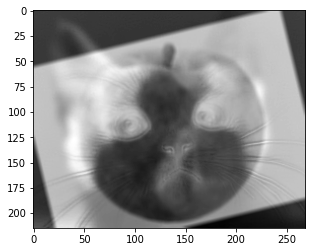

Part 1.2: Derivative of Gaussian (DoG) Filter
Now, I try to use Gaussian filter G to blur the image first (by convolving the image with a Gaussian) and then repeat what I have done in part 1 to compute the gradient magnitude and binarize the graident maginitude. There is less noise.
blur_cameraman_dx
blur_cameraman_dy
 blur_cameraman_gradient_magnitude
blur_cameraman_gradient_magnitude
blur_cameraman_binarized
I used a Gaussian filter first to blure the image and then compute the partial derivatives and gradient magnitude. Now I convolve the finite difference operator D_x and D_y first with the Gaussian filter and then compute the gradient magnitude. The results are identical.
DoG_filter_x
DoG_filter_y
DoG_cameraman_dx
DoG_cameraman_dy
 DoG_cameraman_gradient_magnitude
DoG_cameraman_gradient_magnitude
DoG_cameraman_binarized
Part 2.1: Image "Sharpening"
To sharpen an image, I first convolve the image with a Gaussian to blur the image which gives a low frequency image. Then, I subtract the low frequency image from the original image to get a high frequency image. Finally, I add the high frequency image (by a factor of alpha) to the original image to get the sharpened image.
The first example is Taj Mahal. The original image is on the left and the sharpened image is on the right. The alpha value is 3.
 Original Taj Mahal
Original Taj Mahal
Sharpened Taj Mahal
The second example is a porcelain piece. The original image is on the left and the sharpened image is on the right. The alpha value is 3.
Original porcelain
Sharpened porcelain
The third example demonstrated are the original image of a swallow, the blurred image, and the sharpened image from the blurred image. The alpha value is 3. We can see that the sharpened image looks identical to the original image but not as smooth as the original one. The edges look more artificial.
 Original swallow
Original swallow
blurred swallow
Sharpened swallow
Part 2.2: Hybrid Images
Here I am going to make a hybrid image from two images by combining the low frequency part of an image (obtained by passing through a Guassian filter) and the high frequency part of another.
 man
man
 cat
cat
hybrid
A quick frequency analysis of the hybrid image of cat in low frequency and msn in high frequency.
The first image is a hybrid peach and cat, kind of a failure
peach in low frequency
cat in high frequency

The second image is a hybrid hotpot and noodle, kind of a success I think
 hotpot in low frequency
hotpot in low frequency
noodle in high frequency
Part 2.3: Gaussian and Laplacian Stacks
In this section, I will build a Gaussian stack and a Laplacian stack for an image. The Gaussian stack is built by applying a Gaussian filter to the image multiple times. The Laplacian stack is built by subtracting the Gaussian stack from the original image. The Laplacian stack is used to reconstruct the original image.
Gaussian, and Laplacian stacks of apples and oranges
Here we apply a mask stacks (a Gaussian stack of masks)
Mask
Masked Laplacian stacks of apples and oranges
Part 2.4: Multiresolution Blending (a.k.a. the oraple!)
With the Laplacian stacks of both images and the mask image stack built, we can now blend two images together by blending each stage of the stacks and then reconstruct the final image by summing them up. Then we have an oraple!
Oraple
Here is a blended image of lacroix grapefruit and lacroix lime
lacroix_grapefruit
lacroix_lime
lacroix_grapefruit_lime
mask
Here is a blended image of sun and moon
Here is a blended image of a toy and a potato mine from Plant vs. Zombies. The mask is irregular.